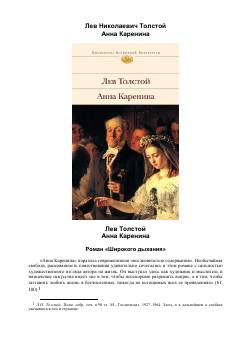

АКTolstoyning sevgi, oila va jamiyat haqidagi beqiyos klassik romani.
"Anna Karenina" — Lev Tolstoyning rus jamiyatini tasvirlovchi mashhur romani bo'lib, sevgi, oila va axloq mavzularini chuqur o'rganadi. Roman Anna Kareninaning fojiali taqdiri va Levinning ma'naviy izlanishlari orqali 19-asr Rossiya hayotini jonli aks ettiradi. Asar jahon adabiyotining eng buyuk ijtimoiy romanlari qatorida tan olingan.